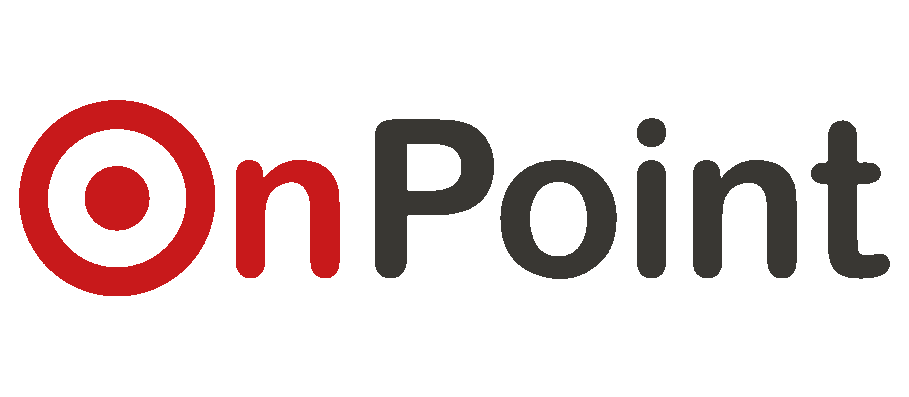

OnPoint E-Commerce
Data Analyst Intern · 10/2025 - 04/2026
Fraud Prevention Project (Internal Controls, Tech & Data Teams)
- Designed 15 detection criteria inPostgreSQL to identify abnormal transaction patterns across 30M+ orders and 6M+ customers, flagging 35,000+ suspicious cases for operational risk.
- Identified a 100% fraud flag rate among high-risk customer segments, confirming the detection criteria's precision.
- Collaborated with the Technology team to integrate detection logic into production for real-time risk monitoring.
Auto Reconciliation Project (Data & Accounting Teams)
- Implemented 12 reconciliation checks to validate consistency between financial and operational data (e.g., NMV, statement amounts).
- Developed PostgreSQL pipelines to extract, transform, and reconcile data across multiple sources, including TikTok Shop transactions.
- Collaborated with Data Engineering team to build an automation tool, reducing 60% of manual workflows.
Business Analysis & Dashboarding
- Investigated root causes of Samsung's high cancellation rate in Q4/2025 via PostgreSQL, and delivered findings with strategic recommendations to reduce cancellations by 40–50%.
- Designed and maintained a chatbot feedback metrics Power BI dashboard based on stakeholder requirements.